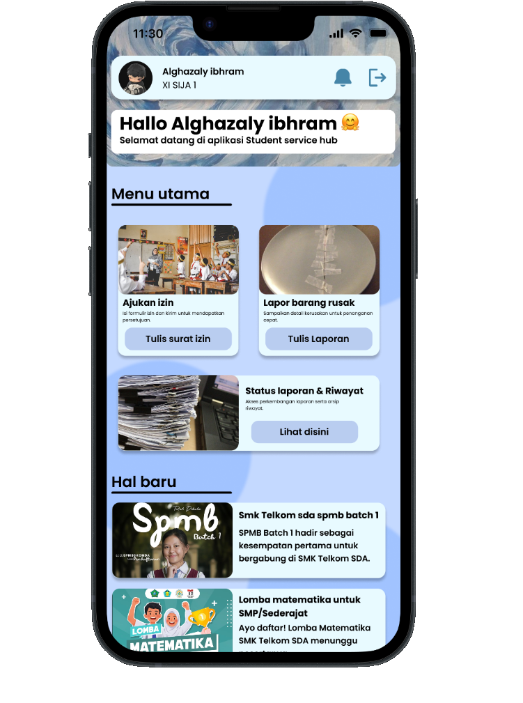
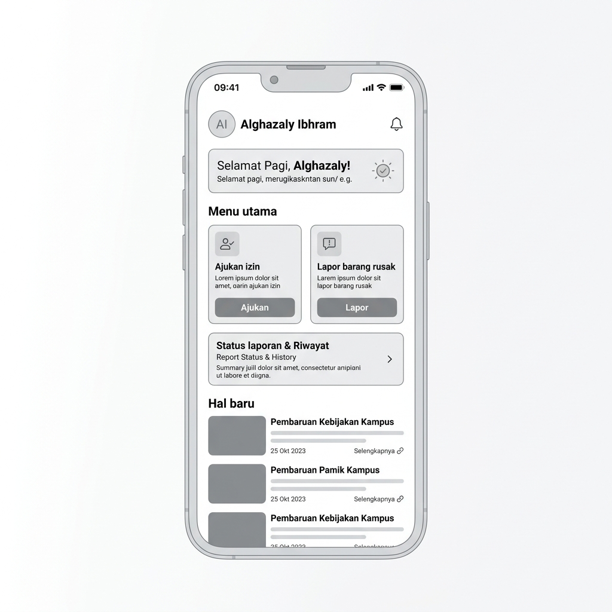

Student Service Hub
One platform for a better student service experience

Tentang Proyek
Student Service Hub adalah konsep platform digital yang dirancang untuk membantu siswa mengakses berbagai layanan sekolah dalam satu tempat.
Dalam kondisi layanan yang tersebar, siswa membutuhkan cara yang lebih sederhana untuk menemukan informasi, memahami prosedur, dan mengakses layanan yang mereka butuhkan.
Melalui project ini, kami mengeksplorasi bagaimana sebuah platform digital dapat membuat pengalaman layanan siswa menjadi lebih terstruktur, mudah dipahami, dan nyaman digunakan.
Tantangan Utama
"Student services can be difficult to navigate."
Berbagai kebutuhan siswa tidak selalu berada dalam satu alur yang jelas. Informasi dan layanan yang berbeda dapat membuat siswa harus mencari tahu sendiri:
- arrow_right Layanan apa yang mereka butuhkan
- arrow_right Di mana menemukan informasi tersebut
- arrow_right Bagaimana prosedurnya
- arrow_right Apa langkah selanjutnya yang harus dilakukan
Masalah tersebut menjadi dasar untuk merancang pengalaman yang lebih sederhana dan terpusat.
How might we create a digital platform that makes student services easier to discover, understand, and access?
Tujuan Perancangan
Tujuan utama project ini adalah membuat pengalaman layanan siswa yang:
Simple
Menyederhanakan proses pencarian layanan bagi seluruh siswa.
Clear
Menyajikan informasi dengan struktur yang mudah dipahami tanpa kebingungan.
Accessible
Memudahkan siswa menemukan dan mengajukan layanan yang mereka perlukan.
Consistent
Menggunakan pola interface yang konsisten di seluruh bagian platform.
Memahami Pengguna
Sebelum masuk ke visual design, proses dimulai dengan memahami kebutuhan dan perjalanan pengguna. Kami melihat pengalaman siswa ketika melewati 5 fase krusial:
Dari proses tersebut, kami mencoba menemukan bagian-bagian yang berpotensi membuat pengalaman pengguna menjadi kurang efektif dan memperbaikinya secara menyeluruh.
Peta Perjalanan Siswa (Customer Journey)
Customer Journey Map digunakan untuk memetakan pengalaman siswa ketika berinteraksi dengan layanan sekolah.
01 — Need
Siswa memiliki kebutuhan spesifik atau ingin menggunakan suatu layanan sekolah.
02 — Search
Siswa mencari informasi mengenai ketersediaan layanan dan lokasi pengajuannya.
03 — Understand
Siswa mempelajari dan memahami persyaratan dokumen serta alur prosedur.
04 — Access
Siswa mengakses dan mengisi formulir pengajuan layanan yang dibutuhkan.
05 — Complete
Siswa mendapatkan status pemrosesan hingga penyelesaian pengajuan layanan.
Arsitektur Informasi
Berdasarkan kebutuhan pengguna, informasi dalam platform disusun agar lebih mudah ditemukan.
Dashboard
Ringkasan & StatusServices
Katalog LayananService Details
Syarat & ProsedurUser Info
Data SiswaNotifications
Update StatusProfile
Akun & RiwayatTujuannya adalah mengurangi langkah yang tidak diperlukan dan membuat pengguna dapat memahami posisi mereka di dalam platform setiap saat.
Alur Pengguna (User Flow)
User flow dibuat untuk menggambarkan bagaimana siswa berpindah dari satu tahap ke tahap berikutnya secara seamless.
Dengan membuat user flow terlebih dahulu, desain interface dapat dibuat berdasarkan kebutuhan dan alur pengguna, bukan hanya sekadar estetika visual semata.
Struktur Wireframe
Setelah struktur dan user flow ditentukan, tahap berikutnya adalah membuat wireframe low-fidelity.

Pada tahap ini, fokus utama bukan visual, tetapi bagaimana pengguna dapat menyelesaikan tugas (task) dengan efisien.
Design System Showcase
Untuk menjaga konsistensi interface, dibuat sebuah design system yang menjadi dasar visual Student Service Hub.
Color Palette
Typography
Clean & Readable Typography Scale (Inter & Manrope)
UI Components Library
A more structured student service experience.
Final interface Student Service Hub menggabungkan hasil research, customer journey, user flow, wireframe, dan design system menjadi satu pengalaman digital yang lebih terstruktur.
"From research to interface — every screen was designed around the user's journey."
My role in the project
Dalam project Student Service Hub, saya berkontribusi pada proses UI/UX dan pengembangan interface secara menyeluruh.
Pembelajaran Utama
"Designing is more than making things look good."
Project ini membuat saya memahami bahwa proses UI/UX tidak berhenti pada membuat interface yang terlihat menarik semata.
Desain yang baik harus dimulai dari memahami masalah dan kebutuhan pengguna, kemudian diterjemahkan menjadi struktur, alur, dan interface yang dapat digunakan dengan mudah.
Saya belajar bahwa setiap keputusan visual sebaiknya memiliki alasan yang jelas dan mendukung pengalaman pengguna secara nyata.
Refleksi Akhir
From problem to experience.
Student Service Hub menjadi salah satu project yang membantu saya memahami proses UI/UX secara lebih menyeluruh. Mulai dari memahami masalah, memetakan perjalanan pengguna, membuat struktur dan wireframe, hingga menerjemahkannya menjadi high-fidelity interface.
Project ini memperkuat ketertarikan saya pada UI/UX Research dan Interface Design, sekaligus bagaimana desain tersebut dapat diterapkan ke produk digital yang nyata.